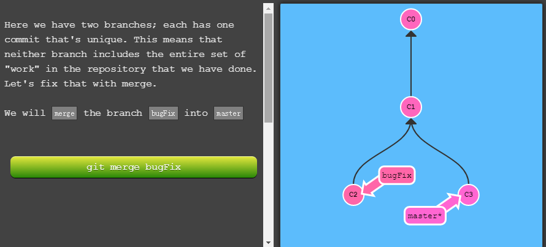

公司一直用的是svn（集中式版本控制系统 ），一般日常提交代码用update（从中央服务器上获取最新代码）和commit（将本地代码提交上去，提交前会用Beyond Compare软件对比修改一下）两个命令就能满足一般需求，偶尔会看一下日志，用一下版本回滚。但是最近搭博客，开始使用github，了解到git（分布式版本控制系统）好像很火？大家都在推荐，于是用了一下这个新工具。
首先，如果你想详细了解git原理和使用，狠狠点击这里！此外，还有很多关于git不同风格的博客啊，比如廖雪峰写的git教程。
但是，如果你口味清奇有趣，可以选择这个，敲生动，适合食用！
然后，列一下学习记录：
先学点简单的：
1.网上下载安装git，得到大礼包：Git Bash，Git GUI，Git CMD，一般操作使用Git Bash即可。
2.本地新建文件，使用git init将它变成待用仓库。
3.获取代码：
1 | git clone <server url> //将远程仓库 上的代码拉到仓库中。 |
4.修改代码后，这样提交它：
1 | git add <filename> //提交 到缓存区（index） |
或者使用：
1 | git add . //提交 所有改动文件到缓存区 |
再将其提交到本地仓库中：
1 | git commit -m "修改信息" //提交到本地仓库中的HEAD上 |
期间，你可以用git status查看文件变化。
下图是我修改blog中的文件时，git status返回的文件状态
1 | git push origin master //提交到远程仓库origin |

如果你没有进行第3步，这里使用：
1 | git remote add origin <server url> //提交到远程仓库 |
5.我们经常要将远程仓库中的代码更新本地：
1 | git pull |
满足基本的需求后，我们了解一下git的分支功能：
1.创建、查看、切换分支：
1 | git branch newbranch //新建一个名newbranch的分支 |
然后就可以在确定的分支下操作（比如上方的基础操作）。
2.进行分支间的操作，比如：
1 | git branch -d newbranch //删除这个分支 |
来一张learngitbranch的图：

此时可能产生冲突，用git status查看情况，再去文件修改解决冲突，用git add
当然除了分支，git还有很多功能（标签，撤销操作，版本回退），当有其他情况可以去查找命令，以上。